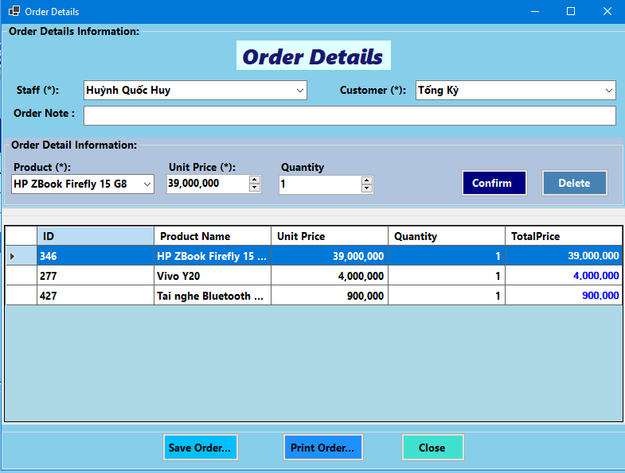

This guide provides comprehensive instructions for managing sales orders within the **HK.Huang Sales Management Software**. This includes viewing, creating, updating, deleting, searching, printing, and exporting orders, as well as managing order details.
Overview of the Orders Screen
The main Orders management screen (frmOrders) provides an overview of all sales orders. Here you can:
- Order List (Data Grid View): Displays all sales orders with key information such as Order ID, Date, Employee Name, Customer Name, Total Price, and Notes.
- Action Buttons: Buttons to create new orders, update existing ones, delete, print, and export data.
- Navigation and Search Bar: Tools to navigate through the list and find specific orders.
Image: The main interface for managing orders.
Viewing and Navigating Orders
Upon opening the Orders screen (frmOrders_Load), all sales order records are automatically loaded into the data grid view.
- Navigation Buttons: Use First (btnBegin), Previous (btnPrevious), Next (btnNext), and Last (btnEnd) to move through the order list.
- Search Functionality:
- Enter keywords into the search box (txtFind).
- The list will automatically filter by Customer Name, Order Date, Employee Name, Note, or Total Price as you type (triggered by txtFind.TextChanged).
- If no matches are found, a "No matching order found." message will appear (in lblMessage).
- Click the Clear button (btnClear_Click) to remove the filter and show all orders.
Creating a New Order
To create a new sales order:
- Click the Create button (btnCreate_Click). This will open the Order Details screen (frmOrderDetails) for a new entry.
- On the Order Details screen, select the Employee and Customer, and add the products to the order.
- Click Save on the Order Details screen to finalize the new order. The Order screen will then refresh to show the newly added order.
Updating an Existing Order
To modify an existing sales order:
- Select the order you wish to update from the data grid view.
- Click the Update button (btnUpdate_Click) or click the View Details link/button in the last column of the order's row (dataGridView_CellContentClick). Both actions will open the Order Details screen (frmOrderDetails) pre-populated with the selected order's information.
- Make the necessary changes to the order details (e.g., add/remove products, change quantity/price, update note, customer, or employee).
- Click Save on the Order Details screen to apply your changes. The main Orders screen will then refresh.
Deleting an Order
To remove an order record:
- Select the order you wish to delete from the data grid view.
- Click the Delete button (bntDelete_Click).
- A confirmation message "Are you sure you want to delete this order?" will appear. Click Yes to proceed or No to cancel.
- If confirmed, an "Order deleted successfully!" message will appear, and the order will be removed from the list.
Printing an Order (Opening Print Preview)
To print an order invoice or preview it before printing:
- Select the order you wish to print from the data grid view.
- Click the Print button (btnPrint_Click). This will open the Print Order screen (frmPrintOrder), showing a printable preview of the selected order.
Exporting Orders to Excel
You can export the current list of orders to an Excel file:
- Click the Export button (btnExport_Click). A "Save File" dialog will appear.
- Choose a location and enter a file name for your Excel file (e.g., Orders_YYYY_MM_DD.xlsx).
- Click Save.
- A "Exported data to Excel file successfully!" message will confirm the export. The Excel file will contain columns for ID, Date, Employee Name, Customer Name, Total Price, Note, and View Details.
Order Details Screen
The Order Details screen (frmOrderDetails) is used to specify the items included in an order, along with customer and employee information. This screen is accessed when creating a new order or updating an existing one.
Image: The interface for managing individual order details.
1. Order Header Information
- Employee (cboEmployee): Select the employee responsible for this order.
- Customer (cboCustomer): Select the customer for this order.
- Note (txtNote): Add any relevant notes for the order.
2. Adding/Updating Order Items (Products)
To manage products within an order:
- Select Product: Choose a product from the "Product" dropdown (cboProduct). The "Price" field (numPrice) will automatically populate with the product's default selling price.
- Quantity: Enter the desired quantity in the "Quantity" field (numQuantity).
- Price: Adjust the "Price" if necessary.
- Add/Update Item: Click the Confirm button (btnConfirm_Click).
- If the product is already in the order details list, its quantity and price will be updated.
- If it's a new product for this order, it will be added to the list.
3. Deleting Order Items
To remove a product from the order details list:
- Select the product row in the order details data grid view.
- Click the Delete Item button (btnDelete_Click). The item will be removed from the list.
4. Saving the Order
Once all order details are correctly entered:
- Click the Save button (btnSave_Click).
- The system will validate that an Employee and Customer are selected.
- If it's a new order, it will be created. If it's an existing order, it will be updated.
- A "Saved successfully!" message will confirm the operation, and the Order Details screen will close.
5. Cancelling and Closing Order Details
- Close Button (btnClose_Click): Closes the Order Details screen without saving any unsaved changes.
Print Order Screen (Invoice Preview)
The Print Order screen (frmPrintOrder) is dedicated to displaying a detailed, printable version of a selected sales order. It is also where you can generate a PDF copy of the invoice.

Image: The print preview of an order, ready for printing or saving.
1. Viewing the Order Invoice
- Upon opening, this screen automatically loads the complete details of the order you selected from the main Orders screen.
- The report displays a formatted invoice including:
- Company Information: Name, address, and TIN (Tax Identification Number) of the seller (retrieved from application settings).
- Order Date: The date the order was created.
- Buyer Information: Customer's name (and potentially address/TIN if available in the system).
- Order Items: A list of products, quantity, unit price, and subtotal for each item.
- Total Amount: The grand total for the entire order.
- The preview is displayed in a print-ready layout (PrintLayout) with 100% zoom.
2. Exporting the Order as PDF
While on the Print Order screen, you can export the displayed invoice as a PDF file to save or share:
- Click the Print button (btnPrint_Click) located on this screen.
Note: The "Print" button on this specific screen is designed to save the invoice as a PDF file, not to send it directly to a physical printer.
- A "Save As" dialog box will appear.
- Navigate to your desired folder, and the suggested file name will be "OrderReport_[Order ID].pdf" (e.g., "OrderReport_123.pdf"). You can change the file name if needed.
- Click Save.
- A confirmation message "Order saved successfully!" will appear, indicating that the PDF file has been created and saved to your chosen location.
3. Direct Printing (using built-in Report Viewer controls)
To send the invoice directly to a physical printer:
- Look for the standard printer icon (often a small printer image) within the toolbar of the Report Viewer itself (the area displaying the invoice).
- Click this icon to open your system's print dialog, allowing you to select a printer and adjust print settings.
4. Closing the Print Order Screen
- Click the Close button (btnClose_Click) on this screen to close the print preview and return to the main Orders screen.